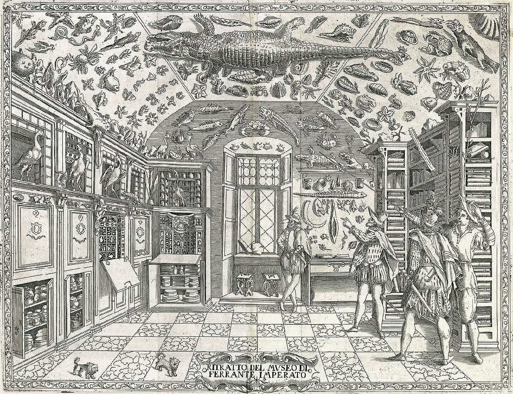

or تخزين,
is an independent research and publishing project dedicated to archives of political publishing practices in the context of Morocco.
as in ?
as in ?
archiving, collecting, accumulating, piling, storing, saving, memorizing...
"All the Arab countries that I know don't themselves have proper state archives, public record offices, or official libraries any more than they have a decent control over their monuments, antiquities, the history of their cities, individual works of architectural art like mosques, palaces, schools. This realisation [gives rise to] a sense of a sprawling, teeming history off the page, out of sight and hearing, beyond reach, largely irrecoverable... Our history is mostly written by foreigners, visiting scholars, intelligence agents, while we do the living, relying on personal and disorganised collective memory, gossip almost, plus the embrace of a family or knowable community to carry us forward in time."
[kh] (خ) is a posterior sound as it happens in the back of the mouth. If we take a look at the history of political publishing in Morocco, a lot of it happened in the underground, in the back of things. The Moroccan liberation movements and the early phases of nation-building in the country, intertwined with global student movements, left behind an array of textual, visual, and sonic traces that circulated through underground and clandestine networks beyond borders. These cultural products, which include materials in French and Arabic, remain obscured, inaccessible and marginalized in studies of Moroccan history and arts.
Having to research and write in a language that is not one's own about histories that are deeply personal comes with many questions. While building ta[kh]zine, it was important to see it as a type of activation of a physical site and collection of objects. Iman Mersel, in Archives & Crimes, says that to enter an archive is to carry an anonymous corpse on your shoulders. You are not investigating how this corpse met its death so much as feeling impelled, somehow, to fill in the gaps that render it anonymous. Whether or not you are hoping to tell the story and share it with others, you might be able to give this corpse a name and lend a meaning to its life. This idea was crucial, particularly when we consider the history of archives in Morocco.
ta[kh]zine researches these histories as well as their involvement in cultural and socio-political spaces in Morocco, in order to use them as a tool for creating, translating, collecting and distributing knowledge.
ta[kh]zine is a tool to work on the construction of a collective memory.
ta[kh]zine lives when it is used, but it is only valid when the material it holds reaches the public space – an idea grounded in a desire to encourage public access to information, an access that frees the past from the dominion of memories built by those who have either political, economic, or social power.
ta[kh]zine hopes to be used to think and investigate memory and history in its different dimensions and overlaps.
If you want to contribute to upcoming issues or collaborate, please contact
Project initiated and edited by Fatima-Ezzahra El Khammas
Website designed and developed by Fatima-Ezzahra El Khammas
"All the Arab countries that I know don't themselves have proper state archives, public record offices, or official libraries any more than they have a decent control over their monuments, antiquities, the history of their cities, individual works of architectural art like mosques, palaces, schools. This realisation [gives rise to] a sense of a sprawling, teeming history off the page, out of sight and hearing, beyond reach, largely irrecoverable... Our history is mostly written by foreigners, visiting scholars, intelligence agents, while we do the living, relying on personal and disorganised collective memory, gossip almost, plus the embrace of a family or knowable community to carry us forward in time."
Edward Said, "Farewell to Tahia", Al-Ahram Weekly, 7-13 October 1999, Issue No.450
[kh] (خ) is a posterior sound as it happens in the back of the mouth. If we take a look at the history of political publishing in Morocco, a lot of it happened in the underground, in the back of things. The Moroccan liberation movements and the early phases of nation-building in the country, intertwined with global student movements, left behind an array of textual, visual, and sonic traces that circulated through underground and clandestine networks beyond borders. These cultural products, which include materials in French and Arabic, remain obscured, inaccessible and marginalized in studies of Moroccan history and arts.
Having to research and write in a language that is not one's own about histories that are deeply personal comes with many questions. While building ta[kh]zine, it was important to see it as a type of activation of a physical site and collection of objects. Iman Mersel, in Archives & Crimes, says that to enter an archive is to carry an anonymous corpse on your shoulders. You are not investigating how this corpse met its death so much as feeling impelled, somehow, to fill in the gaps that render it anonymous. Whether or not you are hoping to tell the story and share it with others, you might be able to give this corpse a name and lend a meaning to its life. This idea was crucial, particularly when we consider the history of archives in Morocco.
ta[kh]zine researches these histories as well as their involvement in cultural and socio-political spaces in Morocco, in order to use them as a tool for creating, translating, collecting and distributing knowledge.
ta[kh]zine is a tool to work on the construction of a collective memory.
ta[kh]zine lives when it is used, but it is only valid when the material it holds reaches the public space – an idea grounded in a desire to encourage public access to information, an access that frees the past from the dominion of memories built by those who have either political, economic, or social power.
ta[kh]zine hopes to be used to think and investigate memory and history in its different dimensions and overlaps.
If you want to contribute to upcoming issues or collaborate, please contact
Project initiated and edited by Fatima-Ezzahra El Khammas
Website designed and developed by Fatima-Ezzahra El Khammas
Copyright:
Every effort has been made to trace copyright holders and to obtain their permission for the use of copyright material.
Special thanks to ©coll. Génériques / www.lesamisdegeneriques.org.
Every effort has been made to trace copyright holders and to obtain their permission for the use of copyright material.
Special thanks to ©coll. Génériques / www.lesamisdegeneriques.org.
Sources:
Edward Said, Farewell to Tahia at Al Ahram Weekly Online. Accessed on 10.7.24.
Iman Mersel, Archives & Crimes, Kayfa ta & Archive Books.
Edward Said, Farewell to Tahia at Al Ahram Weekly Online. Accessed on 10.7.24.
Iman Mersel, Archives & Crimes, Kayfa ta & Archive Books.
A
Archiving
Archiving
In Crossing the Seventh Gate ("عبور الباب السابع")
by Ali Essafi, Moroccan filmmaker
Ahmed Bouanani said:
"For them, archives should not exist. There doesn't have to be
a memory. They were afraid,
all the time, of memory."

Before the Dying of the Light,
Ali Essafi, 2020
type:
Documentary
Documentary
location:
Morocco
Morocco
author:
Ali Essafi
Ali Essafi
year:
2020
2020
source:
Wanted (2011)
Wanted (2011)
Accumulating
B
C
Collecting
Collecting
In 16th and 17th century Europe,
a unique mode of collecting
and organizing collections
was developed. This was the kunst- or wunderkammer literally translating as art- or wonder-room,
or as it is mostly known in English, the cabinet of curiosities.

Dell’Historia Naturale, Ferrante Imperato, the earliest illustration of a natural history cabinet, 1599
type:
Illustration
Illustration
location:
Naples
Naples
author:
Ferrante Imperato
Ferrante Imperato
year:
1599
1599
source:
Smithsonian Libraries
Smithsonian Libraries